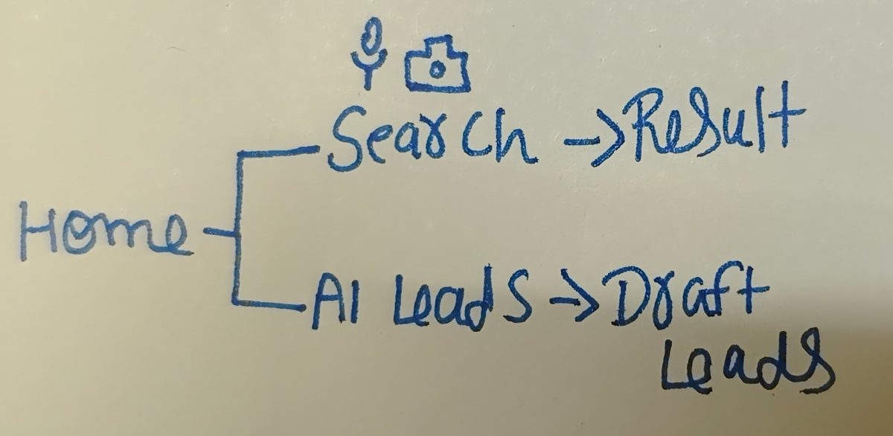

An AI that ranks the leads dealers should call first, and lets buyers find a machine without knowing its name.
Role
UX Design Intern
Timeline
May 2023 – Jun 2024
Platform
iOS and Android
Focus
AI for leads and search
E9 AI case study
Quick read
The origin
AI was on the rise, and we were keen to bring it into EQUIP9. We found two places where it fits. First was ranking and answering leads for dealers, and second was finding a machine by voice or camera for buyers.
What we did
I put an AI Copilot on the homepage. A search bar that takes typed, spoken or camera input for buyers, and AI scored Top Leads for dealers. Every AI step explains itself as it follows existing mental models.
Homepage
2 AI entry points in homepage
The header, banner and tiles stay the way they are. An AI search bar with mic and camera sits on top, and a Top Leads section is added which contains the best leads scored by AI.
Before
After
Leads page
AI draft
Leads
AI ranked leads & summaries
Leads sort by AI relevance, with a 0 to 100 score and a summary beside each. Review & Send AI Draft opens a reply that already names the buyer and the machine. All the dealer has to do is edit and send.
Voice
Results
Voice search
Just say it
A listening orb with a live transcript, then a sheet that opens with what the machine is and what it suits with listings of same or similar equipment.
Camera
Results
Camera search
Just point at it
Point the camera at a machine or part on site and the app names it. The results rise in a sheet over the live view. The result sheet is similar to that of the voice search.
The result
The homepage now ranks the leads and search works by voice or camera. The person still makes every send and every choice, it's just being made easier with the AI integration.
1 · The origin
AI was on the rise and we found two places to use it.
EQUIP9 connects equipment buyers with dealers. With AI moving fast, we were keen to bring it into the app. We found two places where it fits, one for each side of the marketplace and both of them start on the homepage.
Search for Buying
Buyers type, speak or point the camera from the home search bar. Voice and camera let them find a machine by what it does, without knowing its model name, and results arrive in a sheet over the same screen.
Leads for selling
Dealers see their Top Leads ranked by AI, each with a score and a one line summary. AI Draft then writes a reply that already names the buyer and the machine. The dealer just has to edit and send it.
2 · Research
Why now? AI use rose sharply in 2022 and 2023
People and businesses moved from trying AI to relying on it within about two years. The same shift reached India, and it reached search by camera. ChatGPT launched on 30 November 2022, which is why 2023 saw so much of the change.
≈50% → 55%
Organizations using AI in at least one business function, 2022 to 2023
Within a year of gen AI tools appearing, one third of organizations were already using them regularly. More than two thirds planned to raise AI investment.
Companies that have deployed AI, IBM 2022 and 2023
In 2023, 38% of enterprise IT teams were also actively implementing generative AI and another 42% were exploring it. The 2023 survey covered only companies with 1,000+ employees, so read this as direction, not an exact change.
AI in an app is no longer a surprise to users or to dealers, and camera and voice search is already a familiar habit. The risk now is not whether people will accept AI, but whether it is trusted and useful. That is why every AI step in this case study explains itself and leaves the final send or choice to the person.
3 · Principles
2 rules I held the designs to
AI sits on the homepage because every session starts there. An AI feature people have to hunt for is one they will not use, so both entry points are on the first screen, both the search and the leads.
Recognition over recall
Visible entry points are always better than remembered ones.
Example
The search bar cycles examples such as “Try: excavators in Pune”, and the Top Leads heading gains an "AI-scored" label.
Jakob’s Law
People expect search to work like the apps they already use
Example
On the home screen, mic and camera sit inside the same pill, just as our decade old mental model dictates.
4 · Branding
One mark and one gradient for the AI identity
The four pointed star and gradient are both synonymous with AI. This gradient colour is something that is derived from the primary colour of the app. This way it holds onto the E9 brand as well as creating its own identity within it.
Start
#F79C00
End
#FFC83D
5 · The solution
Two flows & One start
Both the flows start in the homepage. The AI functions are kept simple and minimal in the sense, for only what is required and those are leads to follow and stuff to search. The design and IA of this project is based on the image below.

The AI flow
Part 1 · Homepage revamp
Search flow
Voice
Results
or
Camera
Results
Leads flow
Leads page
AI draft
5.1 · Part 1
Homepage revamp
The home screen is essentially serves the same functions as before but with two AI features added to it.
Before
Homepage (Before)
After
Homepage (AI)
The old home asked nothing of the visitor. A header, a banner and just rows and rows of tiles and information, so nothing had priority. There is no search, so finding anything means scrolling, and New Equipment Listing shows the same large cards to everyone.
Homepage (ai)
The new AI homepage
The old functions stay as they were. But two additions change what the home screen is for.
At the top, an AI search bar sits under a small “New — Ask E9 anything” chip that labels the bar as AI. Cycling examples such as “Try: excavators in Pune” teach users what to ask.
Mic and camera sit inside the same pill, as in Google, so typing is never the only way in.
Lower down, the Top Leads heading keeps its text default but adds on a small gradient label, so people know that AI ranked the list.
Large gradient numerals, as in Netflix’s Top 10 row, make rank readable without a legend.
A plain heading says nothing about how the list below is ordered. The same heading with a gradient AI label marks ranked content as AI.
5.2 · Part 2 (SELLER)
Leads flow
The dealer pays for leads, so this is where AI earns its place. It ranks the inbox, shoes the summary and drafts the first reply. The dealer just has to make his edits and send it.
Homepage
Leads page
AI draft
Leads page
Leads ranked by AI
Tapping a Top Leads card lands in the seller inbox. The default sort changes from time to AI relevance. There is always an option to go back.
Each lead card carries a one line summary, such as “Budget fits, urgent — asked about financing”, next to a 0 to 100 relevance score in the AI gradient. Together they make the ranking believable.
The primary action, Review & Send AI Draft, leads to the drafted reply page.
AI lead draft
Your reply is ready
A reply that already refers to the machine the buyer asked about. The seller reads it, edits and sends it.
The top of the screen shows the buyer and the exact machine, so the seller replies to the right person. The message box is labeled AI drafted, which tells the seller a model wrote it and that the text is editable and the border has the same gradient as well.
A WhatsApp toggle sends on the channel dealers already use, with just one switch.
Nothing sends until the seller taps Send Message, so the human is the one that closes the loop.
5.3 · Part 2 (Buyer)
Search flow
A buyer who does not know the model name can say it, show it or type it. The answer arrives as a sheet over the same screen with redesigned components of Equip9 with the same info,
Homepage
Voice
Results
Camera
Results
Voice search
Say what you need
Reached from the mic in the home search bar. A pulsing orb with the E9 AI graident shows the app is hearing, and words appear as they are spoken, so a misheard word is caught at once. One mic and live text keep attention on speaking.
One mic and one instruction, with nothing else around to distract, just like Google voice search.
A result sheet appears after the voice search, the same sheet that the camera uses. Drag it to expand or dismiss and the amber handle shows it can move.
The sheet opens with what the machine is and what it suits, so users learn the vocabulary they were missing.
Below it there is a compact listing cards carry the same photo, model, year, place and price as the full card. It is redesigned to fit the sheet
default listing card
Listing card for AI results
Listing card redesigned for AI
The original card is built for browsing a full page, with one large photo per listing. The small card keeps the information but in a wider and vertically compact space.
The results sheet only covers part of the screen, so several matches must fit.
6 · Inspirations
What I borrowed, and what I changed
These are the few apps that inspired my work.
Google Lens
Jakob’s Law
I kept the Google Lens's layout for the E9 AI camera search and while there were no bounding dots, I replaced it with the analysing tag.
Google voice search
Jakob’s Law
Used the google voice search's single mic and transcript layout. It has a minimalist UI which is good for speaking tasks as it has no distractions.
Netflix
Jakob’s Law
I Kept the large rank numerals as the Top 10 in Netflix but with the AI gradient. It makes the home look more interesting while also serving a useful function.